Redesigning the stats quiz BCU students were already stuck with
A countdown timer, multiple choice, a blunt red cross for every wrong answer — rebuilt into a full game layer, and used to finally test whether a timer's direction or a feedback message's tone actually changes how someone learns.
LIVE IN BCU'S CURRICULUM TODAY
THE REDESIGN, AT A GLANCE
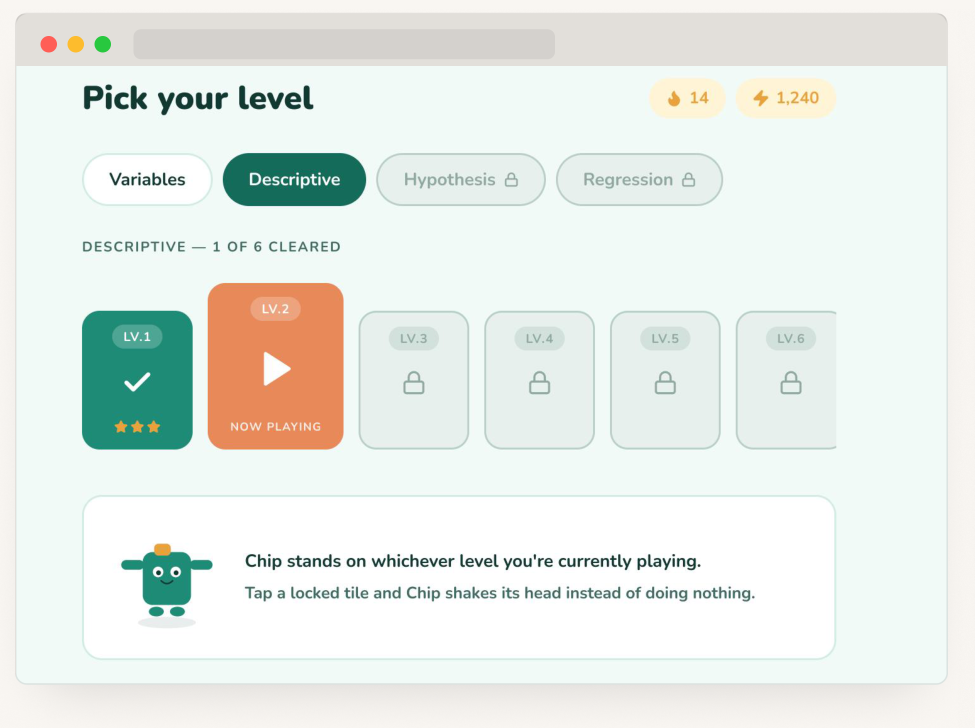
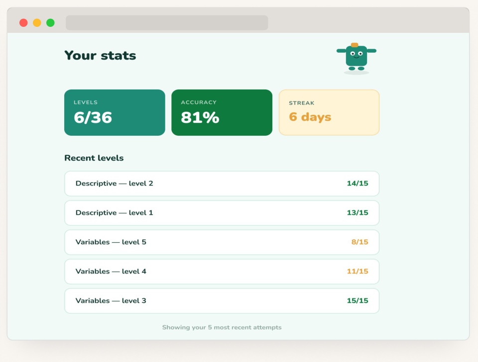
PROTOTYPE WALKTHROUGH
THE PROBLEM
It already existed — and using it felt like sitting an exam
The project started from a real problem one of our project's own advisors, Dr Angel Tan, had already run into in her own research — an earlier statistics tool improved scores, but one in five students dropped out before finishing. Games were the proposed fix.
StatsBoost wasn't a hypothetical. BCU's Psychology department was already using it with real statistics students.
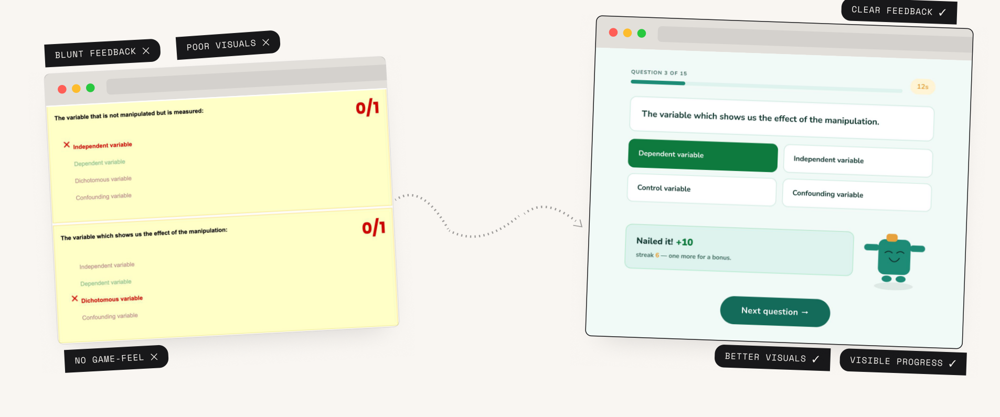
- Rebuild it into something students would actually want to open — not just tolerate.
- Use the rebuild to settle a real, open question: does a timer's direction, or a feedback message's tone, change how well someone learns?
WHAT EXISTING TOOLS DIDN'T DO
- Test timer direction and feedback tone as separate, isolated variables — most tools pick one format and never compare.
- Feel like a serious game built for university-level content, rather than a quiz with a countdown bolted on.
- Give students a reason to open it again the next day, beyond the assignment requiring it.
WHAT MADE IT DIFFICULT
Testing two variables cleanly meant a hard tradeoff on sample size
Isolating timer direction from feedback tone meant four separate conditions, so no one person's results were muddied by both variables changing at once.
TIMER COUNT-UP
TIMER COUNT-DOWN
FEEDBACK BASIC
FEEDBACK MOTIVATIONAL
n=40 total. A between-subject design, each participant experienced only one combination of timer and feedback,not several.
CHALLENGE
A small per-condition sample meant weaker statistical power: a real difference between groups could exist and still not show up in the results.
DECISION
We kept the small sample but changed how we analysed it: reporting effect sizes alongside clear caveats about statistical power, instead of treating any result as conclusive.
WHAT OPTIONS WERE CONSIDERED
Two research variables, two design directions, one mascot search
The research side needed timer direction and feedback tone tested against each other. The design side needed its own round of options — a UI direction and a companion character — each with real ones rejected along the way.
RESEARCH VARIABLE 1
Timer counting up, or counting down
CONDITION A — COUNT-UP
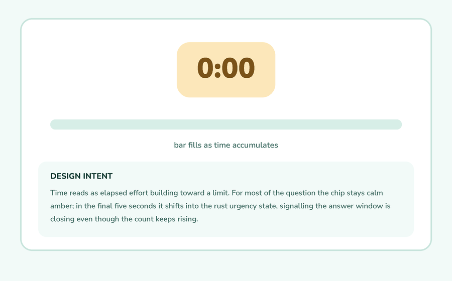
CONDITION B — COUNT-DOWN
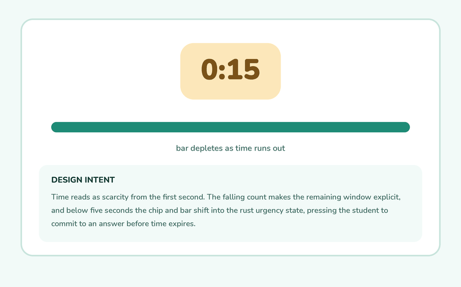
Same question set, same layout — only the timer's direction changed between conditions.
RESEARCH VARIABLE 2
Two feedback styles, run head to head
CONDITION A — BASIC FEEDBACK
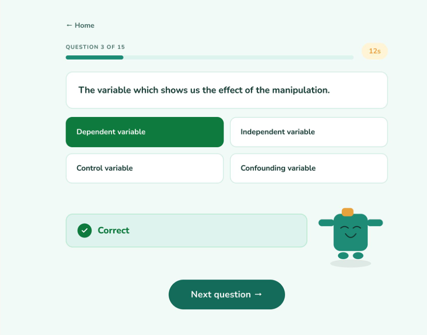
"Correct answer"
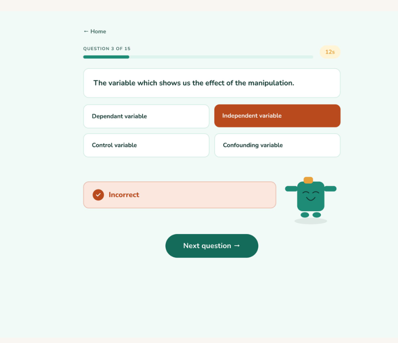
"Incorrect answer"
CONDITION B — MOTIVATIONAL FEEDBACK
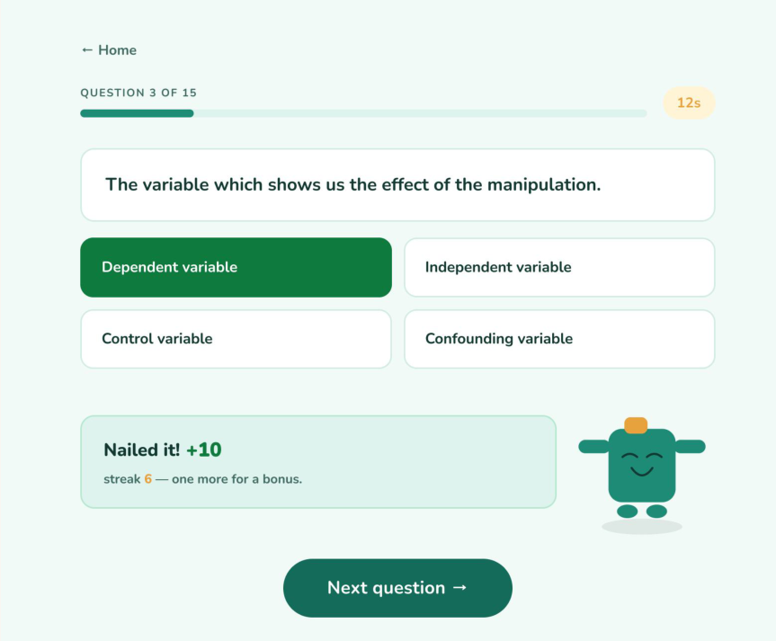
"Nailed it!"
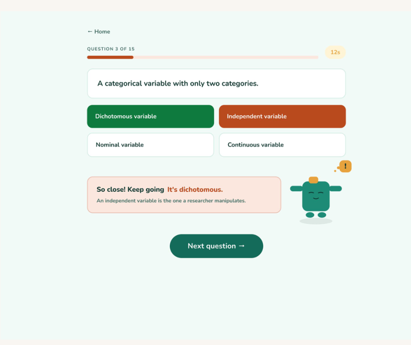
"So close! Keep going"
CHALLENGE
Nobody had tested whether the tone of feedback changes motivation, separate from just having feedback at all.
DECISION
Build both, test them against each other, and let the data — not preference — decide which the final product should default to.
SCOPING THE RESEARCH INSTRUMENT
We compared several standard research questionnaires and scoped down to GEQ’s, whose categories already covered what we needed to measure.
POSITIVE AFFECT
NEGATIVE AFFECT
CHALLENGE
TENSION / ANNOYANCE
Other questionnaire considered were - PSQ/GFM/GEQ/GengQ but dropped as redundant.
WHY GO FURTHER THAN THE TWO VARIABLES
If games were the fix for drop-out, the UI had to actually feel like one
Testing timer and feedback answered a specific question about learning — but that's still a quiz with a stopwatch, not a game a student chooses to open. The brief's other half — rebuild it into something worth opening — meant designing an actual gamification layer: a companion character, levels with stakes, and reward moments. That's what pushed exploration beyond the two research variables into UI direction and mascot design.
DESIGN DIRECTION 1
Two UI directions, considered and rejected
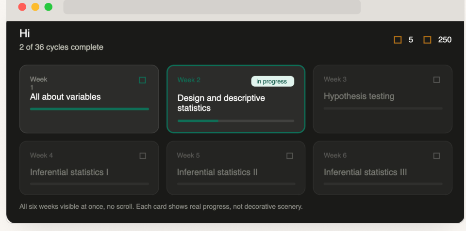
✕ REJECTED — MODULE GRID
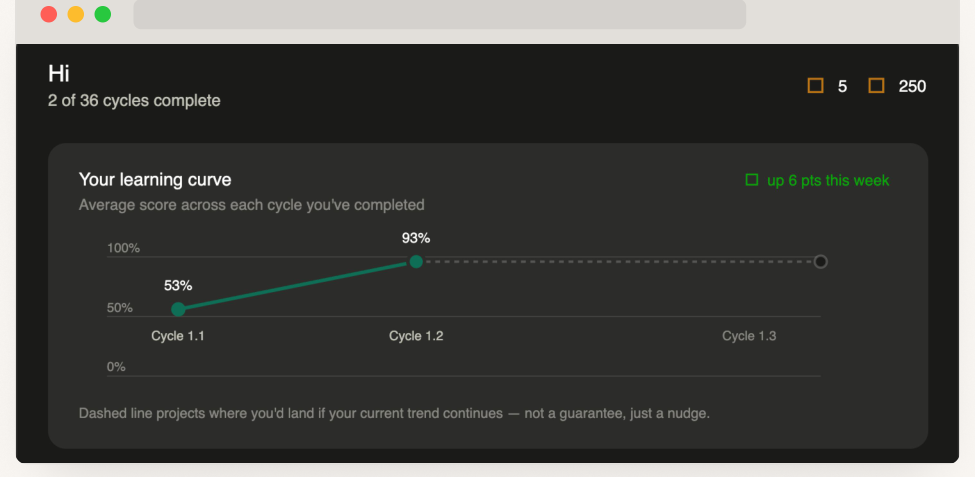
✕ REJECTED — DASHBOARD + CHART
CHALLENGE
Both directions solved the information problem cleanly — clear progress, clean hierarchy, dashboard-grade data clarity — but read like a corporate LMS, not a game a psychology undergrad would want to open voluntarily.
DECISION
Moved to a map-based level layout instead of a dashboard grid — a structure that implies progression and stakes the way a game board does, rather than a report.
DESIGN DIRECTION 2
Three mascots, one that actually fit
A companion character needed to feel likable at a glance — without skewing too young or too abstract for a university audience.
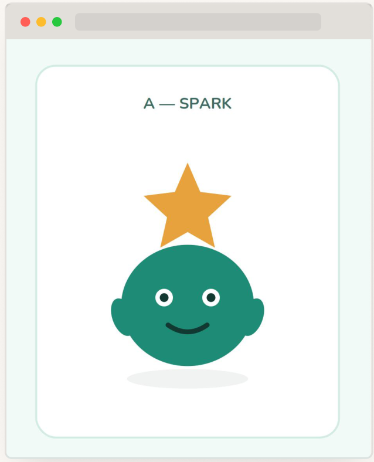
✕ SPARK — REJECTED
Read as built for children — the wrong emotional register for undergrads who don't want to feel condescended to.
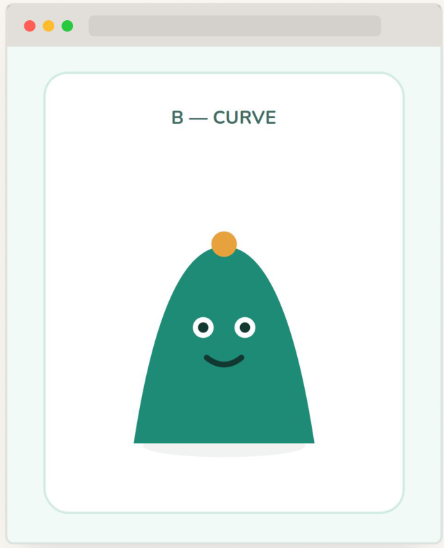
✕ CURVE — REJECTED
The silhouette is the concept — which is also the constraint. A bell curve can't raise its arms or tilt head, so it has almost no range as an expressive character.
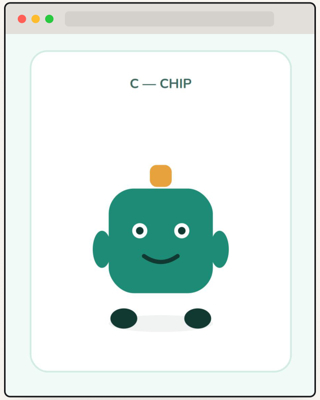
✓ CHIP — SELECTED
Chip's body is the same rounded square used throughout the app, it feels like it grew out of the product. Geometric & friendly to carry emotion.
DESIGN DIRECTION 3
Four gamification decisions, each with a tradeoff accepted
Chip needed a system to live inside — levels, momentum, and reward moments that give the app its game-feel day to day. Shown as isolated elements below, not full screens — the component is the point, not the surrounding layout.
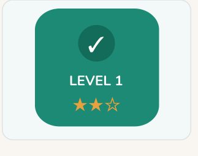
LEVELS + STAR RATINGS
A single long quiz gives no sense of arrival — you're just "still going," nothing to point to and call finished.
DECISION
Broke the weeks into discrete levels with a visible ceiling — 3 stars max — so every session has a defined finish line and a legible score.
COMPLETED LEVEL TILE — 2 OF 3 STARS EARNED
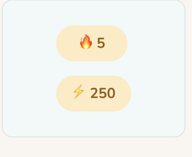
STREAKS + XP
Without any cost to skipping a day, nothing pulls a student back tomorrow specifically.
DECISION
A streak creates a small, visible cost to missing a day; XP gives every correct answer a running total that never resets, so effort compounds.
STREAK AND XP PILLS — HEADER BAR, PERSISTENT ACROSS SCREENS
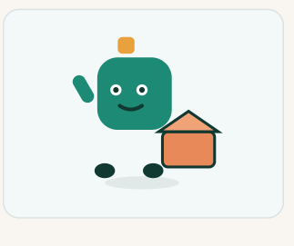
CHEST REVEAL
A number changing on screen doesn't feel like anything — it's information, not a moment.
DECISION
Turned the payoff into a small ritual — tap the chest, see the reveal — so finishing a level has a beat of anticipation before the reward.
CHIP PRESENTS THE CHEST — LEVEL-COMPLETE REWARD MOMENT
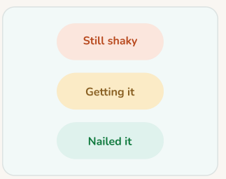
FLASHCARD CONFIDENCE RATING
A flat correct/incorrect doesn't capture "got it, and I know it" versus "got it, but I won't remember it tomorrow."
DECISION
Let the student self-rate — still shaky, getting it, nailed it — so their own confidence, not just accuracy, informs what resurfaces later.
CONFIDENCE SELF-RATING — SHOWN AFTER THE ANSWER REVEAL
Known tradeoff across all four: star ratings can overstate mastery on easy content, streaks can guilt more than motivate around a legitimate break, the chest adds a few seconds of friction, and confidence self-rating is self-reported and can be inaccurate.
"They thought their statistics ability was being graded — not the interface."— WHAT THE PILOT STUDY TOLD US
WHAT THE DATA ACTUALLY SAID
Neither variable moved the numbers — and that's a real finding
Across all four sub-scales, timer direction and feedback tone showed no statistically significant difference: having a timer and feedback at all is what drives engagement — not the exact flavour of either.
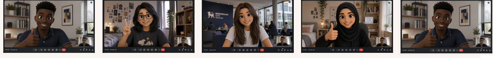
TIMER-UP VS. TIMER-DOWN — MEAN RANK BY SUB-SCALE (GEQ, N=40)
TIMER-UP
TIMER-DOWN
No comparison reached statistical significance across any of the 4 sub-scales [p > 0.05, Mann- Whitney U (a standard test for small samples)].
SAMPLE
n=40, 10 per condition
WILLING TO KEEP USING IT
36 OF 40 SAID YES TO A DIRECT POST-STUDY QUESTION
Separate from the GEQ sub-scales at left — this was a single yes/no retention question, not part of the 4-sub-scale instrument.
WHAT TIMER-UP PARTICIPANTS SAID
- 50% felt urgency, but stayed focused
- 30% called it enjoyable
- Few felt it led to rush
WHAT TIMER-DOWN PARTICIPANTS SAID
- 40% felt pressure that added excitement
- 30% felt genuine excitement
MOTIVATIONAL FEEDBACK
50%FOUND IT ENCOURAGING
MOTIVATIONAL FEEDBACK
30%SAW NO REAL BENEFIT
BASIC FEEDBACK
40%LIKED THE QUICK, PLAIN REINFORCEMENT
"The timer kept me focused and created a sense of urgency... it kept me involved in the game."
— P26
"It was distracting — so did not increase engagement for me."
— P15
“I think the timer encouraged concentration but hindered accuracy in responses…. I think the potential for clicking randomly would be decreased.”
— P32
“The presence of these motivational messages did not really have an effect on me…. It did not enhance my engagement, I didn't give much attention to the messages…”
— P19
WHAT WE CONCLUDED, AND WHAT SHIPPED
The mechanic mattered more than its exact tuning
- Conclusion:
- neither timer direction nor feedback tone significantly changed the scores — but 90% retention backed up the real bet that a game layer, not the format details, is what keeps students coming back.
- What shipped:
- the full gamification layer — Chip, levels, streaks, chest rewards, flashcard confidence ratings — went into BCU's live curriculum build, since it was the redesign itself, not either individual variable, that the retention data validated.
- Timer and feedback defaults:
- with no significant difference between formats, the shipped version defaults to timer count-down and motivational feedback — the combination participants described most positively in open-ended responses, even without statistical backing.
- Accessibility
- Every colour pairing in the design system was verified against WCAG 2.2 AA contrast minimums. Status indicators — correct/incorrect, selected/rejected, use icons and shape, so the interface still reads for colourblind users. Text spacing follows WCAG 2.2's text-spacing criteria.
WHAT'S MISSING FROM THIS STUDY
Stated plainly, not buried
- Participants were recruited from a non-disabled sample, in line with the study's ethical scope at the time.
- Timer pressure and feedback tone may land very differently for neurodivergent or low-vision learners — this study doesn't tell us how.
WHAT I'D DO DIFFERENTLY
- A larger, more diverse sample to give the timer and feedback comparisons more power to detect real differences, if they exist.
- An in-person study to remove distractions an online setting forced on this one.
- A disability-inclusive follow-up before recommending these defaults more broadly — the most important gap here, not an afterthought.
- A collaborative or competitive mode — challenging classmates instead of only yourself — worth testing once the solo loop is proven.
- In-game hints for confusing statistical terms, so the quiz doesn't stall on vocabulary rather than the concept being tested.